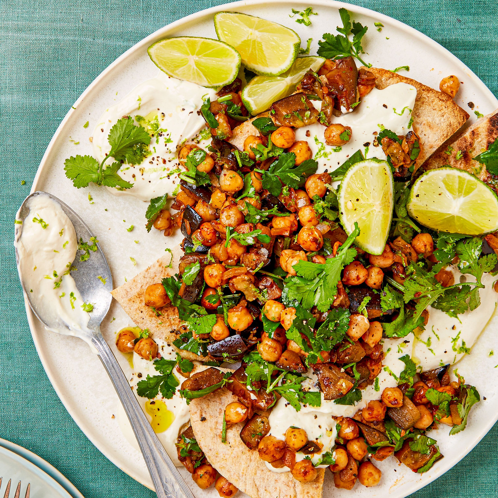

Ingredients
- 4 wholemeal pittas, cut into triangles
- 150g light light crème fraîche
- 3 tbsp tahini
- 2 limes zested and juiced, plus extra zest and wedges to serve
- 2 garlic cloves, crushed
- 1 tbsp rapeseed oil
- 1 onion, finely chopped
- 2 small aubergines, finely sliced
- 400g chickpeas, drained
- 1 tbsp chipotle paste
- ½ small bunch of coriander, roughly chopped, plus extra to serve
Give chickpeas and aubergine a spicy kick with chipotle. Serve on top of pittas with tahini and crème fraîche and finish with lime wedges and coriander
Directions
- Heat the oven to 200C/180C fan/gas 6. Lay the pittas in a single layer on a baking tray and toast for 10 mins until crisp.
- Meanwhile, make the topping. Heat the oil in a large frying pan and fry the onion and aubergine over a medium heat for 10 mins until softened. Add the chickpeas and chipotle paste, and cook for another 5 mins. Remove from the heat and stir in the coriander and some seasoning.
- Whisk together the crème fraîche, tahini, lime juice and zest, and garlic in a bowl, along with 50ml water to loosen.
- To serve, top the toasted pittas with the tahini lime sauce, pile on the aubergine and chickpeas and finish with a sprinkling of coriander, the extra lime zest and lime wedges.